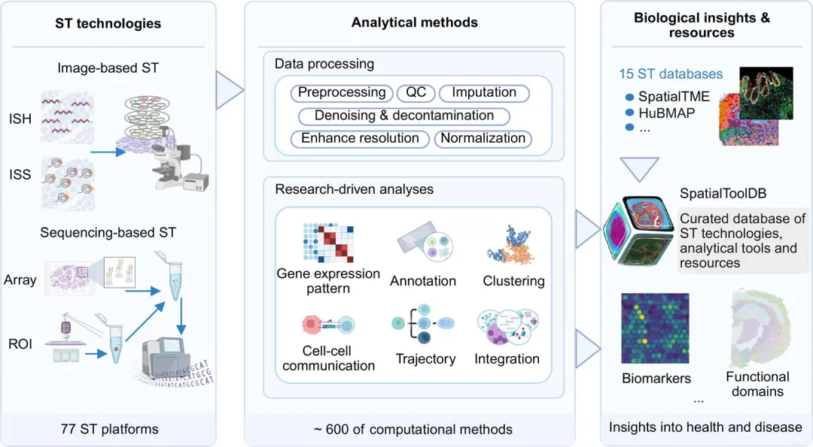
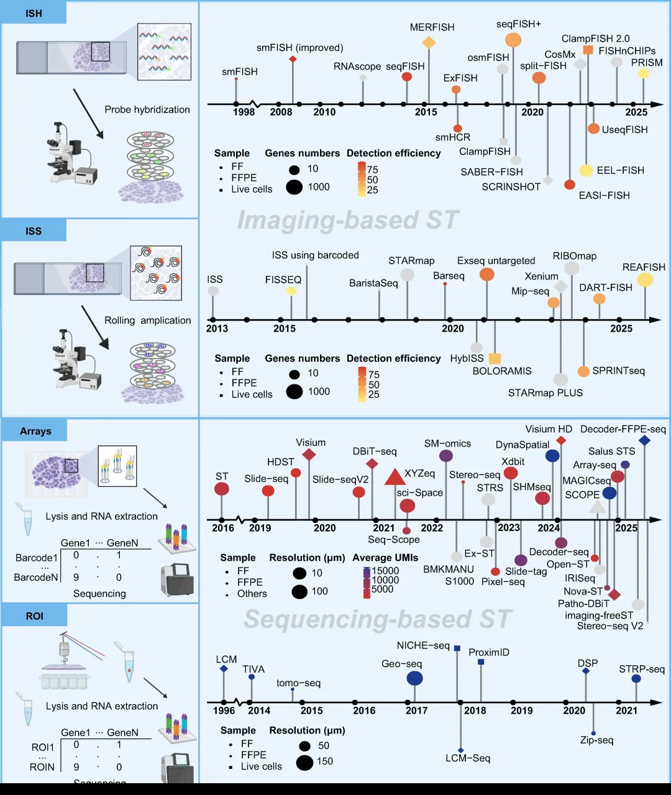
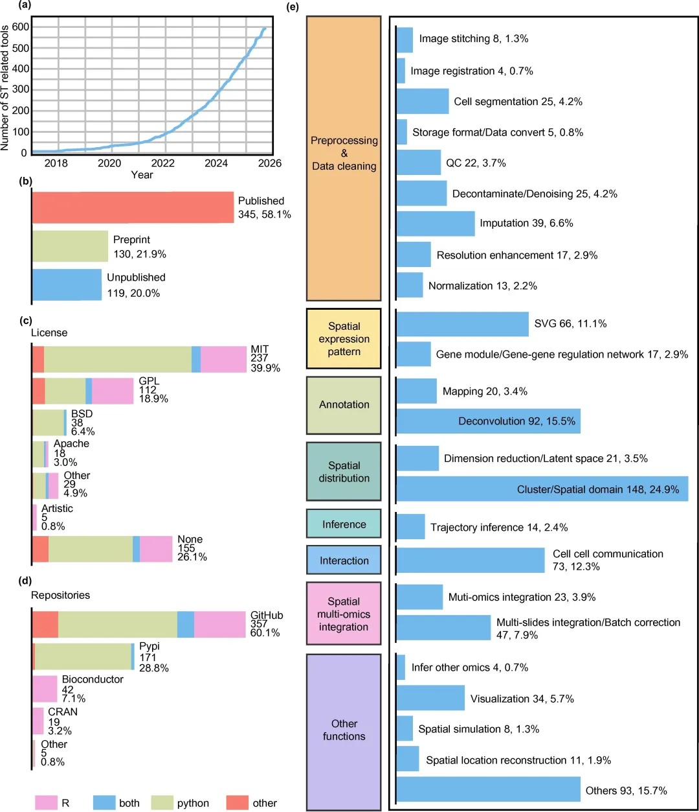
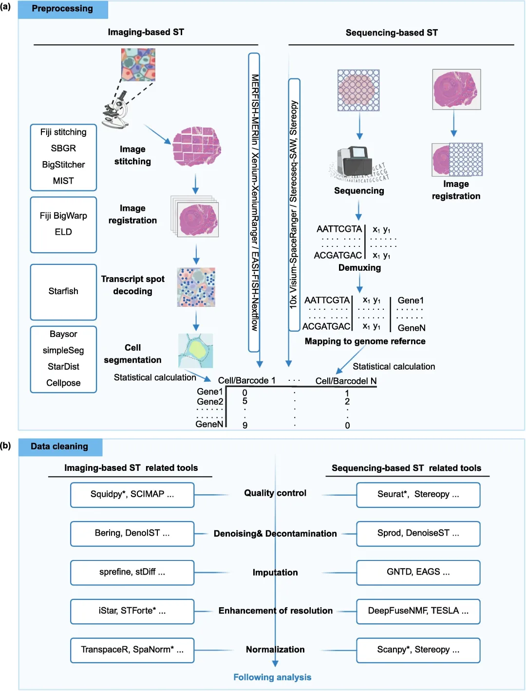
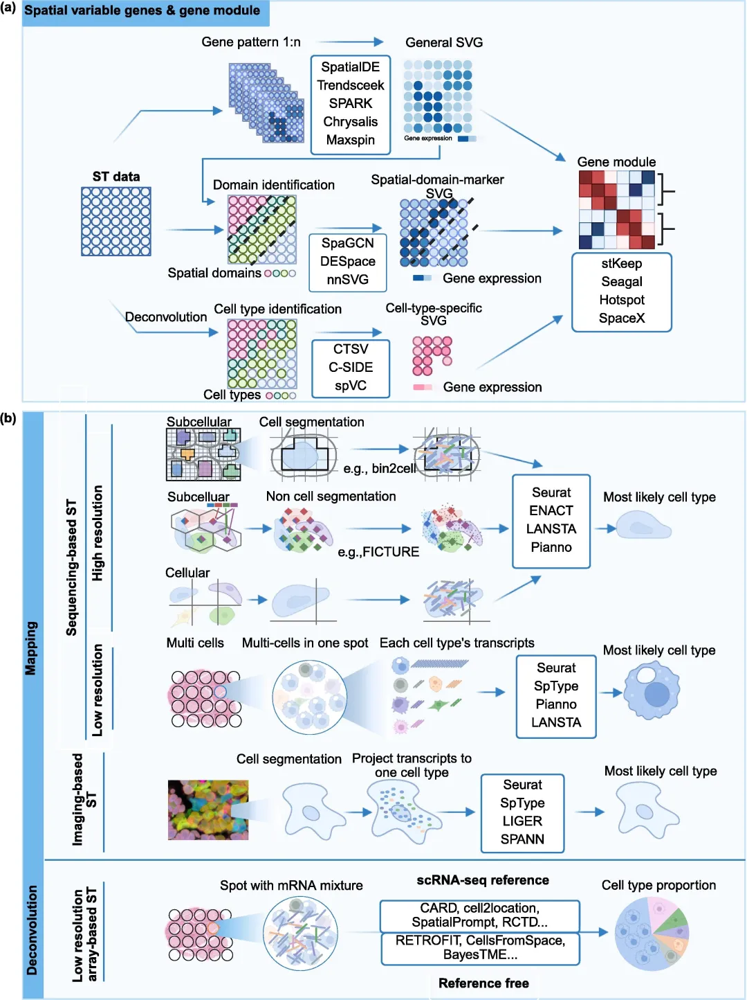
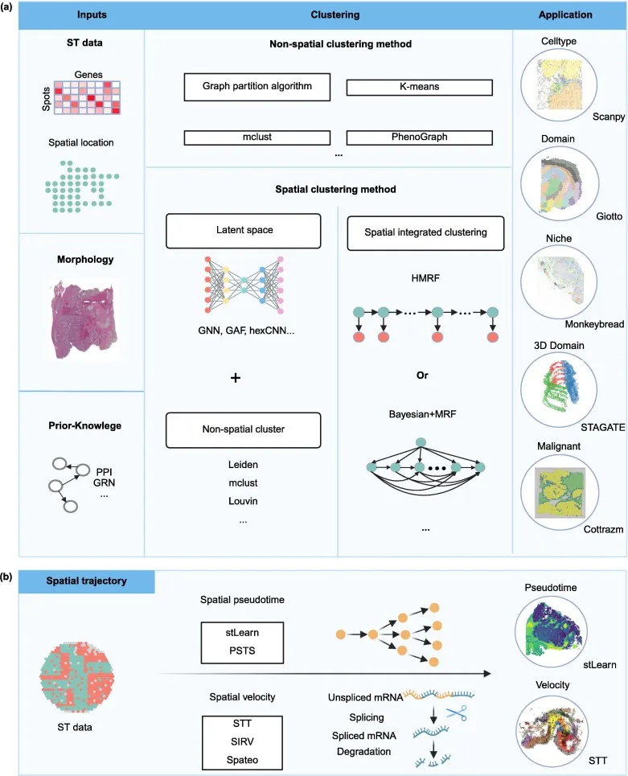
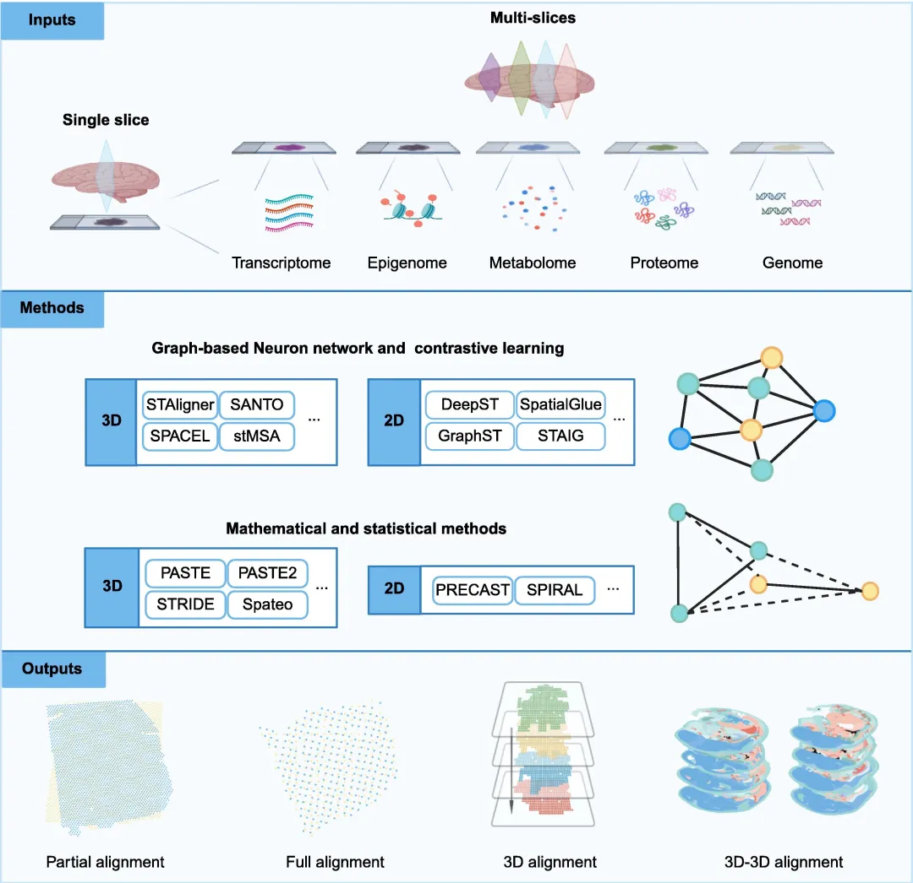
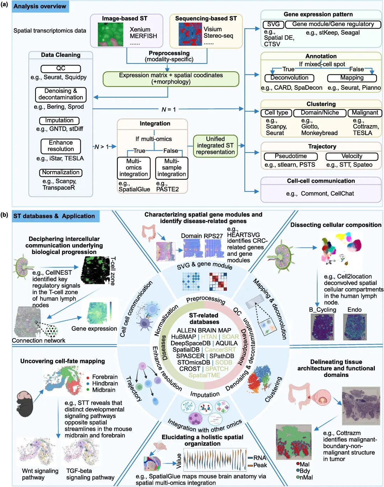

两万字长文：77种平台、594个工具，这可能是空间转录组最新最全的综述
原文：https://mp.weixin.qq.com/s?__biz=MzAwMzIzOTk5OQ==&mid=2247535143&idx=1&sn=e386278a7212555500c159a0eff9c152&chksm=9b3c3377ac4bba61056dfe6ba987b84d0fe7386508d58735496b8d721255f1227d6bb1f8322d#rd 合集：文献速递
一、写在前面
空间转录组学(ST)实验平台和分析方法的快速进展为科研提供了更多的技术选择，同时也带来了更多的数据解读挑战。本次分享的综述于2026年1月online在《Sci Bull》(IF=21.1)上[1]。作者系统总结了涵盖77种ST技术和594种ST分析工具。作者整理并讨论了ST的主要分析任务：数据预处理、去噪与补值、空间模式与域识别、细胞组成、轨迹分析、细胞间通信以及空间多组学整合。对于每个任务，作者枚举了代表性的方法，并强调空间分辨率和检测效率差异带来的平台依赖性考量。作者还强调了ST数据的分析应用如何通过揭示空间异质性、组织组织结构和情境依赖的细胞相互作用。此外，作者开发了SpatialToolDB（不发Article可惜了），该平台整合了本综述涵盖的ST技术、分析方法及相关数据库，方便大家快速选择工具和方法比较。文中还包括ST技术和分析工具的发展趋势和未来方向，包括空间技术的进展、人工智能驱动计算、基准测试与标准化，以及机制和预测空间生物学实验验证的进展。该综述与SpatialToolDB共同为选择针对多样化生物和转化研究应用的ST平台和分析策略提供了数据驱动的基础。

更多空转教程可见：
二、Why? scRNA→ST
单细胞RNA测序（scRNA-seq）极大地推动了对不同生物系统中细胞异质性的理解。然而，scRNA-seq无法在组织中保留空间信息。这种空间环境的丧失阻碍了对细胞在其原生微环境和组织结构中相互作用的洞察。ST能够通过在完整组织切片中定量化基因表达，弥补了这一空白，既保留了空间定位，也在某些情况下保留了分子过程的三维结构。通过整合空间信息和转录信息，ST提供了一个强大的框架，用于剖析复杂组织景观中的细胞功能。近年来，许多ST平台，在分辨率、视野、转录组覆盖率和检测灵敏度方面都有所提升。该综述系统评估了77项ST技术，考察空间分辨率、组织兼容性、检测效率和基因覆盖等参数，并对平台特定特性进行了全面评估，帮助研究人员根据实验目标和关注的生物学问题做出明智、快速的平台选择决策。
ST技术的快速发展带来了高维、多模态ST数据的激增，带来了数据处理、分析和集成的挑战：计算可扩展性、内存占用、噪声建模、方差稳定、空间自相关与邻域定义、样本间的批量效应以及跨平台协调。大量的ST工具支持广泛的分析：质量控制与归一化、原始数据预处理、空间变量基因（SVGs）识别、细胞组成预测、细胞间通信（CCC）分析、轨迹推断、基因模块识别、多组学集成、数据可视化和空间仿真建模。然而，自2022年以来，这一领域迅速扩展，从数十个公开工具扩展到600多个平台，同时新增了分析目标（如3D重建、空间基因调控网络推断、生成模拟）、更广泛的跨模态集成，以及向基于图和深度学习的方法的转变。
在本综述中，作者全面介绍ST技术和计算工具，涵盖分析工作流程的全部光谱。对于每一类工具均定义关键概念，描述底层算法，概述子类型，并突出代表性应用。作者还开发了 SpatialToolDB（https://spatialtoolDB.yelab.site），这是一个人工整理的数据库，包含约600个ST分析工具及相关ST数据库，按功能角色系统地组织。作者表示，这项工作代表了目前ST平台、分析工具和ST数据库中最全面且整合的资源。
如果需要数据分析指导 、生信热点全文复现 、自测数据个性化分析 辅导、常态化学习，欢迎联系客服微信[Biomamba_zhushou]。
三、空间转录组主流平台与分别类
单个组件的功能和行为会持续受到其周围微环境的影响。ST通过空间分辨测量基因表达，因此，空间环境对于研究复杂生物网络至关重要。ST提供了研究完整生物系统内空间异质性、细胞间信号传递及组织组织的方法。这一能力为空间异质性和细胞微环境动态、细胞间信号传导、生态位形成、新出现的组织级行为等情境依赖过程提供了更深入的见解。当前的ST技术大致可分为两大类：基于原位成像的技术(image-base)和基于下一代测序(NGS-base)的方法。Figure 1展示了这些技术的发展和关键里程碑的时间顺序概述，而表1则对其核心属性进行了比较总结，以支持在多样化研究环境中的明智应用。该综述专门将检测效率用于基于影像的原位杂交（ISH）和原位测序（ISS）方法，指的是通过杂交和解码过程确定的靶向转录本成功原位检测的概率。相比之下，检测灵敏度用于描述基于测序和基于感兴趣区域（ROI）的ST平台，反映了它们在特定地点或区域内捕获和检测转录本的整体能力，通常通过检测到的基因数量或总转录本计数等代理指标来量化。

Figure1
(1)、基于成像的ST
基于成像的ST技术，如ISS和ISH，通过直接在原有组织环境中可视化转录本，提供卓越的空间分辨率。ISH通过标记探针检测预定义的转录本，而ISS则结合周期成像与条形码测序化学技术，识别组织中的转录本身份，保持纳米级空间坐标。ISH通过杂交互补探针并成像产生的荧光斑点来检测转录本。自1998年引入单分子原位荧光杂交（smFISH）以来，ISH展现出高灵敏度，在最佳条件下的检测效率可接近单分子回收率。后续的进步催生了下一代ISH技术，其复用能力和空间分辨率显著提升。如seqFISH和seqFISH+ 等技术采用了鲁棒条码和多轮杂交，在亚细胞分辨率下实现高达约95%的检测效率。其他专业化学方法，如单分子杂交链反应（smHCR），则提升信号放大、组织穿透性和成像深度，使厚组织（如全脑切片和斑马鱼胚胎）实现高分辨率成像。ExFISH通过原位凝胶膨胀物理放大样品，提高空间分辨率，从而减少荧光拥挤。近期商业平台，包括CosMxTM空间分子成像仪（SMI）、Xenium、MERFISH，使数千个转录本能够并行检测。MERFISH通过迭代杂交实现高复用，生成空间条码，而Nanostring CosMx™和Xenium则采用高度多工探针设计，以精细的空间分辨率进行靶向原位杂交。这些平台为空间转录组分析提供了强大且可扩展的解决方案，支持实验和转化研究需求。
ISS结合组合条码和循环成像，直接原位测序，实现大规模基因panel的同时保持纳米级空间精度。技术上，ISS分为两大类：（i）基于挂锁探针的方法，利用滚动环扩增生成受限荧光放大器;（ii）直接原位测序方法。挂锁探针方法涉及将可圆化探针杂交至靶向RNA，随后滚动环扩增生成空间限制的荧光信号。间隙挂锁技术引入了额外步骤，如逆转录和DNA连接，以保留原始转录本的部分序列信息。例如，基于挂锁探针的BaristaSeq方法，将非间隙挂锁探针与基于流的测序结合，实现高效且可扩展的转录本身份解码。直接原位测序策略，如荧光原位RNA测序FISSEQ，则放弃使用挂锁探针，直接对逆转录和扩增的RNA分子进行非定向测序。该方法实现了全转录组分析，无需预设基因靶点，适合需要无偏空间转录组谱的探索性应用。如ExSeq等混合方法将ISS与组织扩展整合，提升空间和分子分辨率。除了上述类别外，STARmap还代表了一种与ISS相关但化学上不同的原位测序策略。与传统的挂锁式ISS不同，STARmap使用SNAIL探针，直接杂交RNA，无需逆转录，随后进行滚动环扩增。综合来看，这些进展使基于成像的ST成为一种多功能、高分辨率的空间生物学范式，提供针对性且无偏的策略，以亚细胞精度绘制复杂的生物系统中的基因表达。
值得注意的是，RIBOmap是ISS整合了核小体结合mRNAs技术的产物，用于选择性检测核糖体结合的mRNA。其三探针结构由一个rRNA靶向夹板探针、mRNA靶向的挂锁和引物探针组成，使得仅能翻译的核糖体相关转录本进行原位扩增和测序。通过支持核糖体参与mRNA（>5000个基因）的高空间结构分析，RIBOmap生成了真正的空间转录组，揭示了细胞类型特异性、区域特异性和细胞器定位的翻译程序，弥合了转录本丰度与蛋白质输出之间的长期差距。
(2)、基于测序的ST
基于测序的ST技术利用下一代测序（NGS）和空间编码的DNA条码，同时捕捉基因表达谱并将其映射到组织中的原始位置。在这些方法中，首先通过空间条码捕获转录本，然后转换为测序文库，并通过计算映射回其原始坐标进行空间重建。
a、基于阵列的ST
基于阵列的ST技术利用捕捉探针或打印在玻璃载玻片上的空间条形斑点，原位捕捉poly(A)+转录本，同时保留每个转录本的位置信息。该领域的一项关键早期进展出现在2016年，引入了位置条码mRNA捕获的概念。它将独特的局部特异性条码、独特的分子标识符（UMI）和多（T）寡核苷酸印制在微阵列载玻片上，选择性结合聚腺苷酸转录本。这一创新为后续如Visium和Slide-seq等技术奠定了基础。另一种设计使用类似于Drop-seq中的珠子，嵌入分池条码、UMI和poly-(T)。这些珠子可以像Slide-seq那样以单层形式分布在载玻片上，或局限于载玻片表面的蚀刻孔中，如HDST。在HDST中，珠子特异性条码通过多次顺序荧光杂交循环解码，在cDNA测序前确定每个珠子的空间身份。基于阵列的ST技术提供广泛的空间分辨率，从多细胞到亚细胞尺度。低分辨率平台如Visium从每个点捕获多个细胞的转录组数据，具备高扩展性但空间粒度有限。相比之下，超分辨率方法如Stereo-seq 、HDST和Visium HD实现亚细胞分辨率，支持细微空间分析。然而，更高分辨率通常伴随着捕获效率下降和技术噪声增加的代价，需要细致优化和计算校正。
新兴的无光学ST技术因克服传统阵列平台的局限而备受关注，这些平台依赖分子近距离相互作用，而非捕获阵列、光学成像或预设空间坐标。这些方法将接近信号直接从测序数据转换为空间关系，实现可扩展且灵活的空间映射。例如，IRISeq（使用索引测序的成像重建）利用DNA条形珠捕捉数千个空间位置的基因表达，并通过珠子相互作用解码其排列。类似地，SCOPE（通过寡核苷酸邻近编码的空间重构）通过分析扩散介导的DNA相互作用重建空间图，生成高分辨率图谱，无需光学成像或预定义阵列。
b、基于ROI的ST(感觉这一段作者是不是写错了，似乎应该移到image-base那部分去)
作为阵列型ST方法的替代方案，也可以通过激光捕捉显微切割（LCM）实现全转录组空间剖析，从而精确分离特定组织区域。LCM在明确的ROI中对转录组分析尤为有价值，并且已被证明在针对离散生物特征方面非常有效。基于LCM的ST策略包括引导ROI选择、光学可寻址激活以及基于显微解剖的序列切片。例如，NanoString GeoMx平台通过组织切片的荧光标记实现了引导式投资回报率（ROI）选择。借助集成在GeoMx仪器中的紫外激光和显微镜，分离特定区域，并将每个ROI的RNA含量沉积到96孔板中，用于后续条形编码和测序。其他光学可寻址的方法，如NICHE-seq和TIVA，利用外源荧光标记物通过激光照射选择性激活和捕获细胞或组织区域，实现目标区域的高精度转录组分析。相比之下，基于显微解剖的方法如tomo-seq和ProximID 通过物理切片将组织切片成小块来重建空间转录组信息。这些方法可以结合三维映射和序列切片，以保持空间上下文并实现体积分析。
每个ST平台都有独特的优势和局限性，关键评估标准包括空间分辨率、检测效率以及可检测的基因数量。其他因素如组织穿透深度、样本类型兼容性和视场也在判断特定技术的适用性中起重要作用(在线表S1)。在现有平台中，ISH和基于数组的方法因其灵活性和可扩展性而被广泛使用。相比之下，ISS通常用于更专业的应用，而基于ROI的ST方法则通常用于高度针对性的分析。ISH和ISS都依赖探针设计和荧光成像，导致基因检测能力受限和对目标序列先验知识的依赖等共同局限。ISH在空间分辨率和检测效率方面尤为出色，许多方法的效率超过70%，有些如seqFISH可达95%。然而，ISH在区分细微转录变异方面面临挑战。ISS通过间隙锁探针和原位测序来解决这个问题，实现了转录本变异和点突变的短读检测，这对临床诊断和癌症研究非常有用。基于测序的阵列通过提供全转录组覆盖和可扩展的通量来补充成像，但存在不同的权衡。
近期基准研究开始在多种空间转录组平台之间进行系统性和定量的比较，为解读性能权衡提供了宝贵背景。例如，You等人对基于测序方法的系统评估显示，不同技术在捕捉灵敏度、空间分辨率和分子横向扩散方面存在差异。此外，人类肿瘤组织中高通量亚细胞空间转录组平台的基准测试工作评估了捕获敏感性、特异性、扩散控制及与邻近参考数据的一致性，凸显了不同方法在复杂生物学应用中的优势与局限性。基于成像方法的进一步比较分析进一步说明探针设计和面板尺寸如何影响跨平台的检测性能。Cook等人比较了Xenium和CosMx，指出平台选择应与研究目标相匹配，优先考虑灵敏度和动态范围，以可靠检测基因表达模式和细胞类型。这些基准研究整体支持对空间转录组技术在灵敏度、效率和空间分辨率方面的更细致比较，并为选择适合特定研究环境的方法提供了实用指导。
基于测序的ST方法，尤其是使用基于数组mRNA捕获的方法，具有显著优势，包括广泛的适用性、成本效益高以及高通量研究的可扩展性。尽管有这些优点，但此类方法常常受限于检测灵敏度较低，通常捕获不到10%的转录本，且分辨率相较于ISH和ISS。因此，提高分辨率和转录本捕获效率仍是基于测序的ST技术发展的关键优先事项。在实践中，先进的生物信息学，包括空间映射/反卷积、聚类、基因-程序推断、邻域感知统计和通路富集，有助于从稀疏的测量中提取强有力的生物学洞见，揭示微环境、表型和相互作用。
四、空转分析工具
尽管方法论快速进步，ST分析生态系统仍然分散：工具分散在多个平台上，通常针对特定分辨率或技术设计，且很少以系统化、平台感知的方式进行基准测试。这种碎片化使研究人员难以为其数据类型、分辨率和生物学问题找到最合适的方法。为了应对这些挑战并描述这一快速演变的ST分析格局，作者开发了SpatialToolDB，这是一个交互式、公开可访问的门户，汇集了ST分析的计算工具。工具按功能和平台手动分类，汇总基准为平台提供分辨率、稀疏度和组织复杂度的具体性能指导。SpatialToolDB 被设计为持续更新的资源，将通过人工管理和自动化仓库持续整合新工具、新版本和基准测试结果。工具的策划始于2016年，截至2025年9月30日，数据库包含594个工具（见Figure 2a），反映了ST工具生态系统的快速增长。在这些工具中，58.1%为同行评审出版物，21.9%为预印本，20.0%为未发表（Figure 2b）。虽然大多数工具采用标准开源许可证，但约26.1%的工具缺乏明确许可，可能阻碍代码的重用、可重复性和可用性。最常用的许可证是MIT许可证，通常与基于Python的工具相关，其次是GPL和BSD许可证（见图2c），这些许可证都允许在特定条件下（例如声明的归属和保存）下重用代码[55]。在仓库方面，60.1%的工具托管在GitHub上，28.8%托管在PyPI，其他工具托管在Bioconductor和CRAN（见Figure 2d）。SpatialToolDB 功能性地将这些工具分类为关键任务，包括数据预处理与清理、空间基因表达分析、组织和细胞类型注释、CCC 推断、空间轨迹重建以及空间多组学集成（见Figure 2e）。

Figure 2
五、空转常见分析流程与软件
(1)、ST数据预处理
预处理是所有类型ST分析的基础步骤。它将原始图像/信号转换为生物学上可解释的基因/细胞/点计数矩阵，用于后续分析。该过程通常包含两个部分：（i）图像处理，将空间信号与组织图像对齐（包括基于成像的多周期/多通道配准和漂移校正）（ii）信号处理，将收集的信号转换为后续分析所需的基因-细胞/斑点矩阵（见Figure 3a）。质量控制（如斑点/细胞滤波、背景和照明校正）和归一化通常用于稳定方差，然后进行下游建模。以下概述了基于影像的ST的关键考虑因素;后续将讨论基于测序的工作流程。

Figure 3
a、基于成像的ST的预处理
工作流程涉及管理多周期、多视场（FOV）图像堆栈，通常包括图像拼接、图像配准、转录本点解码和细胞分割。图像拼接通过合并重叠的视场角，形成跨大组织区域、亚像素对齐、大数据量以及阶段性扭曲修正的无缝拼接。广泛使用的缝合工具包括ASHLAR、MIST、TeraStitcher 、Fiji、SBGR和BigStitcher。图像配准将杂交轮间的循环/通道对齐到共同坐标系，解决样品漂移和色差，同时实现与组织学的配准。常见的注册工具包括Fiji BigWapper、ELD和SBGR。条码/点解码涉及在每个点聚合信号模式，重建对应特定基因的条码或序列，并配备纠错处理光学噪声和串扰;未匹配的信号被丢弃。像Starfish这样的工具便于这一解码步骤。在识别出ST信号后，细胞/细胞核分段通过膜标记或核种子结合扩展/流域策略，划定每个细胞的掩码进行定量。流行的分割工具包括Baysor、simpleSeg、StarDist和Cellpose。然后将信号强度或点计数分配到细胞（或局部邻域），生成细胞基因基质和基础质量控制（QC）指标，用于后续分析。尽管每个预处理步骤都有专用工具，但许多商业ST平台提供集成软件解决方案，以简化整个流程流程。例如，MERFISH平台提供MERlin，Xenium平台使用XeniumRanger，EASI-FISH平台则集成了EASI-FISH Nextflow管道。
b、基于测序的ST预处理
基于测序的ST预处理通常包括三个阶段：（i）组织学/图像处理，（ii）读取处理和基因定量，以及（iii）将计数与切片坐标连接的空间配准。初始阶段执行照明/背景校正、多视场（FOV）的堆叠/缝合，以及刚性/非刚性配准，以创建保持坐标的马赛克。随后检测组织区域形成组织掩膜，切片预设的斑点网格（或珠子位置）被标记到马赛克上;每个点/珠子都有独特的空间条码和坐标，为下游分析提供空间支架。接下来，测序读段通过空间条码和UMI进行解复用，适配器被裁剪、比对/伪比对到参考点，UMI则缩小为每个基因点的分子数，生成逐基因表达矩阵。最后一步将计数矩阵与注册的斑点坐标连接起来，生成空间特征矩阵和质量控制指标（例如，每个斑点的UMI/基因数、线粒体基因分数）。基于测序的商业ST平台提供专用的预处理软件以简化这些步骤。例如，10× Visium平台使用Space Ranger，而Stereo-seq技术依赖StereoCell。这些工具标准化关键步骤（图像配准、复用复用、比对、UMI折叠、坐标分配），以提供稳健且可重复的预处理，用于下游生物解释。
(2)数据清理
a、质量控制
质控通过保留高质量的单元格或空间点供后续分析，确保来自影像和测序平台的ST数据的可靠性。实际上，QC会在归一化和建模前去除技术瑕疵（如失焦瓦片、碎片、气泡）、低信息单元（低基因数）以及生物异常值（双重态或受损细胞/斑点）。许多集成分析工具包集成了内置的质量控制程序。例如，Squidpy是为基于成像的 ST（例如 Xenium）设计的，基于极端转录本计数、异常细胞大小过滤细胞，并支持空间质量控制可视化以检测局部聚集的伪影。对于基于测序的ST，修拉常用于排除低质量斑点，理由包括转录本计数低、基因仅检测到少数点或线粒体基因表达比例过高。阈值依赖于数据集和组织，通常通过质量控制指标的空间图进行调整。
专用QC工具，如SpatialQC和SpotSweeper，进一步提升数据质量。SpatialQC使用预定义的指标评估单个细胞或斑点的质量，包括线粒体基因百分比、总基因计数和标记基因表达比。它还能标记空间异常值，表明技术问题。SpotQP识别并消除因样本准备错误产生的低质量观测和空间伪影，提升下游分析的准确性。
b、去噪与去污
ST数据中的噪声，通常源自捕获效率低、采样方差、光学/化学伪影以及掉落零点，会显著影响下游分析。ST技术噪声的一个常见来源是每个点或珠子的测序深度较浅，这会带来显著的随机变异和过度色散。去噪方法通过借用空间邻居和基因-基因结构的强度来减轻这种差异，同时保持真正的空间对比。为了应对这些挑战，开发了多种降噪工具。例如，Sprod整合空间坐标和匹配成像数据，构建潜在图模型，平滑噪声并输入缺失值，以获得更准确的基因表达谱。另一工具DenoiseST采用双通道架构，结合图卷积网络(GCN)与自编码器，共同编码空间上下文和表达，并模拟线性/非线性关系以减少掉频。DenoiseST 兼容 10× Visium、Slide-seq、Stereo-seq和Visium HD。实际上，去噪可以提升聚类/域发现和SVG检测，但参数应调整以避免过度平滑。
点交换，或称RNA扩散，是ST中常见的现象，即mRNA分子在组织处理过程中在相邻捕获点间迁移，导致污染和UMI定量不准确。尽管该问题可能出现在多种ST平台上——包括10× Visium、Slide-seq、Slide-seqV2和Stereo-seq——但其严重程度在不同技术间差异较大。斑点交换在阵列方法如10× Visium中尤为明显，长的组织渗透步骤和相对较大且密集的捕获点促进了广泛的侧向RNA扩散。相比之下，基于微珠的平台如Slide-seqV2则表现出较低的交换水平，因为冷冻组织转移和密集的微珠限制了分子的运动。同样，Stereo-seq因其亚微米级DNA纳米球间距、极小的渗透性以及有效限制RNA迁移的组织处理程序，对传统点交换的影响较小。
目前，SpotClean是处理10× Visium及类似Visium平台中RNA扩散问题最广泛使用的工具。为减少RNA泄漏，SpotClean采用概率模型估计并扣除局部污染，从而增强标记基因特异性并改善空间注释。然而，由于其框架依赖于背景条码和明确的斑点边界，SpotClean专门为Visium或其他类似Visium的ST平台设计，无法应用于缺乏这些基本功能的基于珠子的方法，如Slide-seq或Slide-seqV2。例如，ren等人利用SpotClean精炼了肿瘤组织中短读段ST-seq获得的基因表达模式，从而识别恶性胶质瘤中桡骨胶质干样细胞的生态位特异性富集和脆弱性。实际上，在预处理阶段应用SpotClean可以锐化聚类，优化定量，并提高10× Visium或类Visium类ST平台的下游可靠性。目前，Slide-seqV2 和 Stereo-seq中没有专门的点位切换纠正工具。
c、补偿
补缺估计ST中缺失的基因表达值，并利用统计或机器学习模型提升整体数据质量。基于测序的ST平台常因捕获量低且深度浅而出现掉落（表达基因未被检测到）的问题。同样，基于成像的ST方法针对有限的基因面板，且捕获可能不理想，导致对未测量基因进行补值。补值方法（例如，gimVI 、Tangram、SpaGE、stImpute、stPlus、scVI）大致可分为将单细胞RNA测序（scRNA-seq）与ST数据整合的和完全依赖ST数据的。Tangram将scRNA-seq与空间坐标比对，重建全转录组图谱。SpaGE利用scRNA-seq和ST间共享的低维结构，实现基因表达在不同模态间的转移。stPlus 利用 scRNA-seq 增强ST缺失基因，同时控制平台偏倚。相比之下，基于图的方法如stImpute通过基因-基因和空间邻域图传播信息，预测空间表达模式。gimVI和scVI使用变分自编码器建模基因表达计数分布，并考虑补值的不确定性，填补缺失值。
除了专用的补实算法外，EAGS、SPCS和SPIN等多种方法还执行空间平滑/去噪。这些工具减少噪声并填补空白，功能上与补补重叠，但通常不跨模态转移。一个实际的注意点是过度平滑，这可能会模糊真实边界、膨胀空间自相关性或产生假阳性;建议进行参数调优和保留基因评估。尽管具有潜力，补补工具的采用仍相对有限，反映了其近期出现、scRNA-seq与ST之间的领域转移，以及金标准基准数据集的稀缺。然而，通过恢复低丰度和未检测到的转录本，插补可以显著提升下游任务，如基因模块检测、空间域或细胞类型映射以及通路级推断。
d、分辨率增强
ST平台涵盖亚细胞、细胞和多细胞分辨率，计算上标可减少粗采样。为了克服较粗的斑点尺寸和部分体积效应，开发了一系列用于提升分辨率的计算工具，并扩展到空间多组学。这些策略大致分为两类。
空间平滑/子点解卷积。第一类借鉴了本地邻里或概率子点模型的强度来细化边界。例如，像DIST和BayesSpace这样的工具利用邻域结构来锐化域。贝叶斯空间尤其将贝叶斯建模应用于局部邻域，推断亚斑点组成，从而实现子斑级分辨率、改进聚类和更细的转录边界。一个实际的注意事项是可能出现过度平滑;建议采用交叉验证的指标和边界检查。
图像引导超分辨率预测。这些方法利用高分辨率的组织学或多路复用成像来预测更细粒度的表达图谱。TESLA、iStar、XFuse和 ImSpiRE等工具学习图像-表达对应关系，重建超解析映射，恢复粗阵列中丢失的空间细节。TESLA通过在学习的超像素框架中整合组织学图像与基因表达数据，提升空间分辨率。它在亚斑点/超像素层面输入基因表达，填补组织空白，生成超分辨率基因表达图，支持像素级注释和细微结构特征的检测。TESLA已被广泛应用于空间图集项目。例如，Han等人。报告了TESLA增强后，KRT8肺泡中间细胞标记的更精确定位，以及更接近组织学结构的比对。模型表现依赖于训练组与靶组组织之间的准确共配组和结构域转移。
除了转录组分辨率提升外，像SoScope这样的工具还将这些原理扩展到空间多组学。SoScope采用深度生成模型整合多模态组织信息，并以亚点分辨率推断组学谱。通过将每个空间斑点视为更细小的“亚斑”的混合，并将其分子谱与空间坐标和形态特征关联起来，SoScope提高了分辨率，减少了转录组学、染色质可及性、DNA测序、蛋白质组学和表观基因组学空间组学数据的变异性。这些方法共同减轻了空间组学中的粗采样，使得更清晰的结构域划分、更清晰的信号梯度和更精确的微解剖结构映射，从而推动组织组织和疾病机制的研究。
e、归一化
基因表达数据的归一化是ST分析中的关键步骤，旨在纠正实验条件差异、测序深度和探针捕获效率等因素带来的技术变异。有效的归一化稳定表达计数，减少技术混杂，并保持空间结构，确保后续分析如差异表达、聚类和空间可视化反映的是生物信号而非伪影。一种常见的归一化策略是通过每个样本检测到的转录本总数来标度基因表达计数，也称为文库大小/大小因子归一化。该方法广泛应用于scRNA测序和ST，调整不同点或细胞间测序深度的差异。常见的规范化工具包括Seurat、Scanpy和Scran。在修拉中，LogNormalize方法通过每个细胞或点的总RNA数量来衡量基因表达，然后进行对数转化以调整测序深度。Seurat的另一种先进方法SCTransform采用负二项回归模型来校正测序深度、批次效应和技术噪声，从而提升方差稳定性。Scran 提供 computeSumFactor函数，该函数将表达计数在多个细胞或点之间汇聚，然后反卷积以估计单个缩放因子，适用于稀疏且高退出率的数据集。此外，针对体量RNA-seq开发的归一化方法，如edgeR的修剪均值（TMM）方法和DESeq的尺寸因子归一化，也可用于ST数据，以校正测序深度或捕获效率的变异性。
许多基于影像的ST研究采用了如TMM、DESeq2和SCTransform等scRNA-seq归一化方法。然而，这些方法可能无法完全考虑ST数据独特的空间和技术特性。为解决这些限制，针对ST的标准化工具被开发出来。其中一个工具是SpaNorm，它利用负二项广义线性模型（GLM）来区分文库大小效应与真实的生物变异性。通过这样做，SpaNorm 比传统 scRNA-seq 规范化方法更有效地保持空间结构，并增强对空间变量基因的检测。SpaNorm支持基于点的平台（例如10× Visium）和基于分段的平台（例如Xenium、CosMx）。其多功能性和性能提升使其成为ST分析流程中宝贵的补充，尤其适用于具有复杂空间组织的数据集。
ST中的规范化对于减少技术变异、解决数据稀疏性和管理高维度至关重要;然而，一个悬而未决的问题是，应该恢复多少正常化。一些研究者认为总计数反映了局部细胞密度，因此包含有意义的生物学信息，暗示归一化可能掩盖真实信号。另一些人、则认为归一化对于纠正技术偏见和实现不同地点间有效比较至关重要。此外，SCTransform和SpaNorm等新算法力求在消除噪声与保持真实空间变化之间取得平衡。因此，选择和标准化程度应根据平台特性、组织环境和分析目标来指导，以保留生物信号同时尽量减少技术伪影。
还应强调，并非所有数据清理程序都是强制的，这里讨论的方法顺序并不代表严格的执行顺序（见Figure 3b）。例如，对于高深度的 Xenium 或 Visium HD数据集，去噪或补补可能不必要，但对于基于浅层测序且高丢失率的 ST 数据则至关重要。点交换校正（例如SpotClean）对于基于渗透的平台如10× Visium至关重要，但不适用于基于分割的成像平台，如CosMx或Xenium。类似地，一些分辨率增强方法，如iStar，直接对组织学图像工作，无需表达归一化，而像iSpaceal等工具依赖归一化矩阵，并在归一化后、聚类前应用。因此，预处理步骤的选择和排序应以平台特性、噪声水平和分析目标为指导，而非仅凭本节叙述顺序推断。
Figure 3
(3)、识别空间可变基因并定义基因模块
SVG由组织内非随机的空间表达模式定义，对于识别空间域、功能基因模块及其他后续分析至关重要。SVG可分为三类：（i）通用SVG，（ii）空间域标记SVG，（iii）细胞类型特异性SVG[10]（Figure 4a）。一般SVG显示出广泛的空间变异;常用工具如 SpatialDE、Trendsceek和SPARK。空间域标记SVG在特定解剖区域表现出较高的表达，有助于定义空间域;SpaGCN和 DESpace在检测这些标志物和优先排序可能调控因子方面有效。针对特定细胞类型的SVG捕捉特定细胞群体内的空间变异，有助于解析子群体和状态，工具包括CTSV、C-SIDE和spVC。
近期的基准测试研究在关键标准上评估了SVG检测工具，包括检测准确性、鲁棒性、可扩展性、泛化性和空间分辨率的细化。对于一般SVGs，研究报告方法间重叠有限，显示跨工具一致性适中。然而，像SPARK-X 、nnSVG、SOMDE以及Moran's I 等工具（squidpy内置了这个模块）多个基准测试推荐其整体表现强劲。在实际应用中，集成策略（例如跨稳健方法交叉或稳定性加权并集），并控制库大小和空间自相关，可以获得更可靠的共识SVG集合。此外，Kang等人观察到空间-域标记调用高度依赖于域分割的准确性;没有单一方法是绝对最优的。值得注意的是，针对特定细胞类型SVG工具的系统基准测试仍然不足，这对未来研究构成了重要空白。
ST基因模块是一组基因簇，在组织的特定区域内共表达，反映了其潜在的细胞组织和功能相互作用。识别这些基因模块对于理解组织结构及其在原生空间环境中驱动细胞行为的分子机制至关重要。SVG常作为基因模块识别的输入，通常采用层级或基于网络的聚类。像SEAGAL和stKeep这样的工具被广泛用于此目的（见Figure 4a）。SEAGAL 受加权基因共表达网络分析启发，识别空间共表达的基因模块，揭示跨空间区域的动态通路活动。相比之下，stKeep采用异构图学习框架整合多模态特征（基因表达、细胞状态、先前的基因-基因网络如GRNs/PPI）以实现模块发现。这使得它在分析复杂细胞动态时尤其有效，比如肿瘤微环境中的动态。总体而言，基于ST的基因模块分析为解析空间分辨数据中的组织组织和协调基因活性提供了强大的框架。
(4)、细胞组成
标注细胞组成是ST的基础步骤，对于后续分析如CCC和调控网络推断至关重要。方法通常分为两类：映射和反卷积，具体取决于单元类型表示方式（单标签对混合物）（见Figure 4b）。
映射：映射方法为每个空间单元分配单单元类型标签，前提是该单元包含单单元或主要由单单元组成，具体取决于平台分辨率。在高分辨率条码基础的ST中，像StarDist这样的核→单元分割工具可以估算跨箱单元的单元范围。或者，像FICTURE等无分割方法会概率地将像素分配给代表细胞类型特异性表达模式的潜在因子，从而实现无需明确细胞边界的注释。注释单元的选择取决于分辨率;对于Visium HD（最小bin 2 μm×2 μm），8 μm × 8 μm bin可以近似单个单元。相比之下，对于Visium（50微米×50微米），每个斑点通常被视为主要细胞类型，而非单细胞。基于成像的ST通常将单个单元分段。一旦建立了这些最小单位，scRNA-seq开发的工具就可以手动或自动应用用于注释。人工注释虽然耗时，但利用已知标记基因和专家生物学知识，而自动注释则使用带标签的参考文献或匹配的scRNA-seq数据集。近年来，基础模型如scGPT、GeneFormer和CellMemory提高了注释效率和泛化性。此外，出现了专门针对ST的注释工具，如ENACT，结合了分割与通过Celltypist的自动注释。然而，大多数基于scRNA测序的工具并未利用空间上下文，这可能限制了其效果。为此，Pianno和 Spann加入了空间坐标、原始基因计数和标记信息。Spann的耦合变分自编码器将ST与scRNA-seq比对，从而实现基于参考的标记和新细胞类型的发现。
反卷积：反卷积方法主要设计于具有多单元分辨率的ST平台，如Visium，每个空间单元可能包含多种单元类型的混合。这些方法估计每个单元内的细胞类型比例，通常利用scRNA-seq参考。像Cell2location和RCTD等工具在此背景下被广泛使用。Cell2location采用贝叶斯模型推断细胞类型的空间分布，而RCTD则采用适用于高分辨率和低分辨率数据的概率框架。更进一步的无引用方法，如STdeconvolve和RETROFIT，采用替代建模策略（如LDA或贝叶斯层级模型）实现无scRNA-seq引用的反卷积。然而，准确标记组织结构中已知细胞类型通常需要额外的空间上下文。诸如SpatialScope和Tangram等工具通过将基因表达数据投射到单细胞分辨率，生成伪细胞谱并提高定位精度，从而提升分辨率。基于scRNA测序的去卷积工具的基准测试研究一贯识别出Cell2location和RCTD作为基于整体准确性、稳健性和可用性的顶尖工具。在无引用方法中，STdeconvolve在多项评估中表现出优异表现，凸显其在无法获得scRNA-seq应用的潜力。
总体而言，映射和反卷积缓解了分辨率的限制，但在准确性和可解释性之间存在权衡。基于引用的注释依赖于scRNA序列参考的质量和覆盖度，而基于标记的方法则需要精确的聚类和谨慎的标记选择。虽然无引用方法提供了替代方案，但它们通常需要补充信息才能自信地分配已知类型。未来策略应更明确地整合空间上下文（例如联合ST建模、多模态先验），以提高复杂组织中的精度和可靠性。

Figure 4
(5)、空间功能结构的识别
空间功能结构的形成是指细胞类型群体在特定组织区域聚集，进行协调的细胞间通信和调控相互作用。例如，肿瘤中三级淋巴结构（TLS）的形成与免疫治疗反应的改善有关。这些空间组织结构通常映射到特定的细胞类型、功能区/生态位，或与疾病相关的区域，如肿瘤微环境。ST数据特别适合通过聚类识别此类功能结构。ST数据的聚类方法大致可分为三类，基于其空间信息的融入方式：（i）非空间聚类，（ii）潜在空间加非空间聚类，（iii）空间整合聚类（见Figure 5a）。非空间聚类方法完全依赖基因表达特征，不包含空间坐标。该类别常用的工具包括基于图的划分算法，如Leiden、Louvain、K-means和Mclust，这些算法广泛用于scRNA测序数据聚类。

Figure 5
与非空间方法不同，潜在空间+非空间聚类和空间整合聚类包含空间信息，但策略不同。潜在空间+非空间聚类首先将空间和转录组数据融合为共享的潜在表示（例如图嵌入、概率模型或k-最近邻），然后应用传统的非空间聚类。例如，SpatialPrompt在空间图上采用迭代、受消息传递启发的过程计算加权平均表达矩阵，随后对所得的潜在特征应用 k 个平均值以进行域识别。BANKSY通过将平均邻域表达与增强基因流（AGF）描述符结合，构建了一个邻居增强特征空间，后者捕捉了对样本旋转不变的局部表达梯度。单元格嵌入在这个丰富的潜在空间中，并使用基于图的算法进行聚类，如Leiden（默认）、Louvain、k-均值或基于模型的聚类。
相比之下，空间积分聚类直接将空间坐标或邻域图注入聚类目标（作为先验或惩罚），共同执行积分和聚类。例如，Giotto实现了隐马尔可夫随机场（HMRF）模型，用于检测具有连贯基因表达模式的空间域，同时还提供一种独立的“非域”聚类工作流程，使用基于表达的 sNN/kNN 图，随后进行鲁汶或莱顿划分，并可选使用 k-均值、层级聚类或子聚类工具。BayesSpace采用了完全贝叶斯方法，在其混合模型中嵌入马尔可夫随机场先验，促进空间平滑性，使同一簇的斑点空间上相近;参数通过 MCMC 推断，初始化通常由非空间聚类方法如 mclust 提供。
目前，尚无统一基准测试能明确证明某一类聚类策略优于其他类别，因为模型性能高度依赖于平台分辨率、数据稀疏度、组织结构和生物目标。因此，在潜在空间策略与空间整合模型之间的选择，往往需要在不同数据集和空间背景下进行实证评估，而非采用一刀切的方法。
虽然三种聚类策略，包括非空间、潜空间加非空间和空间整合，代表了不同的方法论方法，但它们适用于多个生物学目标。这些目标包括细胞类型聚类、空间域和生态位识别以及恶性区域特征分析等任务。以下子节按生物学目标组织，每节重点介绍各任务的主要方法策略。
a、细胞类型聚类
细胞类型聚类将细胞或斑点分组为具有生物学意义的聚类，作为后续分析（如注释、通信分析和轨迹推断）的基础。聚类质量直接决定下游结果的准确性和可解释性。早期的聚类策略将ST数据视为scRNA-seq，忽略了空间依赖性和组织上下文。因此，最终生成的聚类往往缺乏空间一致性。这可能导致连贯的组织域被分割或合并不同的邻域。
其中一些方法通过附加空间坐标或假设距离较远的细胞不太可能相似来增强基因表达数据。因此，稳健方法编码邻域上下文而不强制物理接近。
Banksy提出了一种新颖的方法，通过使用平均邻域表达和方位 Gabor滤波器（AGF）将细胞嵌入邻居增强积空间。然后构建图并应用降维，将空间上下文直接嵌入潜空间，然后进行非空间聚类。这样既保持了空间上下文，又允许转录相似但分散的细胞聚集在一起。Banksy的关键优势是能够检测空间上散布但转录相似的亚型，这在传统方法中常常被忽略。例如，它成功识别了MERSCOPE人类结肠肿瘤数据集中的循环上皮细胞，并在小鼠海马附近识别出了不同的寡突胶质亚型，这些发现是传统空间或非空间聚类方法未能捕捉到的。
b、空间域与生态位
一般空间域与生态位。空间域和生态位代表组织内执行特定生物功能的独特、空间连续区域，为组织结构和组织提供关键洞见。与主要通过转录相似性分组细胞类型不同，空间域识别明确整合空间坐标和邻域关系。单个结构域可能包含多种细胞类型，反之，同一细胞类型可能跨越多个区域。例如，人类大脑皮层展现出明确的分层结构，不同皮层细胞表现出不同的基因表达模式、形态和生理特征。这种层流异质性支持着多样化的认知和整合角色。
识别空间域的方法通常结合转录组数据与空间信息，以模拟组织组织。例如，GraphST利用图神经网络（GNN）结合自监督对比学习，建模空间接近度和基因表达模式，随后通过非空间聚类定义不同领域。贝叶斯空间在贝叶斯框架内融入空间先验，促进将邻近点分组成连贯的簇。同样，Giotto应用了隐马尔可夫随机场（HMRF）模型，利用空间先验来细化域边界。其他工具如 SpaGCN和 DeepST利用图卷积网络将基因表达数据与来自血液素和伊红（H&E）组织学的组织学特征整合，提高边界准确性和生物学解释性。
然而，大多数当前方法仅限于二维数据。为克服这一限制，STAGATE采用了三维自监督最近邻（SNN）框架，提升了组织切片间的空间连续性。它利用自适应图注意力自编码器，精确定义三维空间域。随着空间组学的成熟，三维域映射将更好地反映真实的组织结构，推动具备三维能力的检测和算法。
生态位是由空间相邻细胞间相互作用定义的局部、功能上不同的单元，基因表达反映了这些微环境影响。为研究此类生态位，像NicheCompass等工具单独分析基因表达数据，或结合染色质可及性峰，整合已知的细胞间和内信号通路以量化局部细胞活性。另一个工具Monkeybread专注于识别特定生态位内的细胞类型共定位模式。该领域缺乏区分“领域”和“生态位”的标准化定义;一个实用的规则是，规模和生态位比领域更细致。建立共识术语和报告标准将提升工具和数据集间的可比性。
恶性区域作为一个独特的空间区域。恶性区域可被视为空间结构域的一种独特亚型，特征包括基因组不稳定性、转录程序改变和组织结构破坏。在此背景下探讨空间域内恶性区域的识别和生态位检测。
通过基于测序的ST识别恶性区域。肿瘤的特征是基因组改变（突变、拷贝数变化）、异质微环境，以及肿瘤内恶性区域及其与周围微环境的相互作用。对于低分辨率的点状层级ST，如SpatialInferCNV、STARCH等工具可以从ST数据推断拷贝数变异（CNV），以识别和注释恶性区域。然而，这些方法使用表达式的CNV信号，通常省略组织学或显式空间先验。为解决这些限制，作者团队开发了Cottrazm，将ST数据与H&E染色组织学图像集成，以实现更精确的肿瘤边界划分及恶性与非恶性区域的区分。同样，TESLA结合肿瘤标志基因表达、空间转录组数据和H&E图像，利用卷积神经网络定义肿瘤区域，而 STANDS采用生成对抗网络模型，结合健康 ST 参考、目标 ST 数据集和形态图像，检测组织内异常区域。这些综合方法结合了分子和形态学背景，以提升恶性区域的检测和注释能力。
对于亚细胞或基于细胞测序的ST，上述工具（例如SpatialInferCNV、STARCH）可以通过原则上将每个细胞或细胞箱视为独立的空间观测来应用于高分辨率ST数据。然而，其适用性尚未被系统性地基准测试，因为空间分辨率、转录本捕获效率、基因计数分布和测序深度的差异可能导致单细胞ST与斑点ST在性能表现上有显著差异。因此，还需要进一步的方法学评估，以确定哪些恶性区域检测策略能有效推广到基于高分辨率测序的平台。
基于影像的空间转录组学。通常，通过基于影像的ST平台测序读段进行CNV推断，无法检测恶性细胞。相反，肿瘤区域的识别通常依赖肿瘤标志基因表达（如EPCAM、KRT8、KRT18、MKI67）、致癌途径激活特征，或从显微镜图像中提取的高分辨率形态线索，有时结合深度学习。最近，Jensen等人证明，CNV推断也可直接应用于基于图像的ST数据，通过原位表达强度实现，从而实现恶性区域的检测，超越纯粹的标记或形态驱动策略。
近期的基准测试研究基于聚类准确性、空间连续性、标记基因检测、可扩展性、归一化互信息（NMI）、同质性（HOM）和完整性（COM）评分等指标评估空间结构识别工具。然而，性能仍依赖于数据集和平台。Yuan等报告称，空间分辨率、矩阵稀疏度、组织复杂度、技术噪声和数据集大小显著影响聚类性能，从而提升了特定平台工具的适用性。值得注意的是，多项基准测试研究一致推荐BASS、和GraphST 用于Visium SpaceFlow用于MERFISH，以及STAGATE用于立体序列数据。这些评估为根据ST平台和研究设计选择合适工具提供了宝贵指导。在实际作中，方法选择应匹配任务和数据：对于细胞类型聚类，仅表达式的方法可能足够;添加空间坐标会增加域的一致性;结合空间定位模式和信号通路可以增强生态位的推断;并整合肿瘤标志物或健康参考，使恶性区域能够被检测。除了聚类，分层通路活动、CNV负荷和组织学衍生特征还能完善模型，更好地将聚集与潜在肿瘤生物学对齐。
(6)、空间轨迹
轨迹推断重建组织中的细胞转变和发育过程。虽然单细胞方法如monocle和PAGA可以推断细胞状态转变，但它们在ST数据上常常表现不佳，因为它们忽略了空间上下文，省略梯度、区域特异性调控和组织连续性。此外，ST数据分辨率（从亚细胞到多细胞）的差异性，在使用基于scRNA测序的轨迹模型时，可能会模糊真实的发育顺序。
为克服这些限制，空间轨迹方法结合表达和空间坐标建模，以保持组织组织结构，并产生更连续、生物学上合理的轨迹。空间轨迹分析通常分为空间伪时间和空间速度（Figure 5b）。
空间伪时间：空间伪时间通过结合表达相似度与空间接近性来排列细胞，以建模连续转变并突出驱动基因。PTPS和stLearn就是为此目的设计的工具。PTPS通过模拟细胞状态之间的转变（例如从状态U到V），利用半方差量化细胞相似性，并优化伪时间值以与空间和转录组模式对齐，推断伪时间。stLearn应用Spearman秩相关性将基因表达变化与空间进程联系起来，识别关键的转录调控因子和细胞转变的时间顺序。
空间速度：空间速度将RNA速度概念扩展到空间域，估计组织内的状态转变速率和流场。这一概念已被扩展到ST，用于研究空间组织背景下的细胞分化。用于空间速度分析的工具包括STT和SIRV。STT构建了一个四维过渡张量，利用多尺度动力学框架模拟细胞、基因、剪接态和吸引子之间的相互作用。SIRV整合scRNA测序数据，推断未测量的基因表达水平，使得通常缺乏显式剪接/未剪接读数的高分辨率基于成像的ST平台实现空间速度推断。
此外，像SpaTrack这样的整合工具结合了伪时间和速度，构建发展轨迹。SpaTrack 使用最优输运（OT）计算表达和空间距离的跃迁概率，相应排序单元格，并从邻居跃迁估算速度。尽管已有大量针对单细胞轨迹推断方法的基准研究和综述，但目前缺乏专门针对空间轨迹工具的综合评估。未来研究应对空间方法的准确性、可扩展性、分辨率/稀疏性的鲁棒性以及在不同ST平台上的实用性进行基准测试。
(7)、基于ST的细胞间通信
细胞间通信(CCC)主要通过配体-受体相互作用（LRIs）发生。这包括信号分子（如激素）与膜受体的结合、膜与蛋白质的直接接触、细胞外基质介导的相互作用，以及细胞因子、生长因子和代谢物等分泌因子的交换。传统的实验技术如荧光原位杂交（FISH）和免疫荧光（IF）在通过共定位分析进行假设驱动的CCC研究中发挥了重要作用。相比之下，现代计算框架与scRNA-seq和ST等高通量技术并行发展，现已实现大规模推断蜂窝通信网络。这些工具促进了CCC网络的重建、新型LRIs和信号通路的优先排序，以及组织和条件间相互作用动态的剖析。在这里，作者将22种基于ST的CCC工具按（i）核心算法，（ii）空间距离的明确使用，（iii）LRI源/管理，以及（iv）下游信令的包含（见表1）进行分类。
算法框架：从算法角度看，CCC工具通常分为两大类：基于机器学习的方法和统计建模方法。在机器学习中，基于深度学习的技术和最优传输表述尤为突出。DeepLinc代表一种基于深度学习的工具，利用变分图自编码器（VGAE）从单细胞ST重建细胞间交互网络。它整合空间邻接和基因表达特征，同时利用对抗网络进行正则化以去除噪声并恢复缺失边缘，从而提升网络的真实度。这有助于去除数据噪声并恢复缺失交互，从而实现更稳健、更准确的网络表示。而SpaOTsc则采用OT框架将 scRNA-seq 数据与空间信息对齐。通过计算细胞间距离分布，它将转录相似度与空间接近性整合，生成更真实的组织级相互作用图谱。相比之下，NiCo是一种统计方法，整合 scRNA-seq和ST数据，以评估微环境如何影响细胞状态。它使用逻辑回归进行细胞类型分类，使用非负矩阵分解（NMF）进行状态变异，脊回归用于评估共定位细胞类型的协变。
空间定位与相互作用距离：空间定位在CCC分析中起关键作用，ST提供了量化所需的转录本定位数据。DeepLinc、SpaOTsc和MISTy等工具专注于分析邻近和远端细胞间相互作用。大多数模型假设相互作用概率随距离衰减，尽管它们并不严格限制相互作用的接近程度。例如，DeepLinc使用单元邻接矩阵建模短程交互，而其潜在VGAE表示则捕捉远距离相互作用，即使在噪声较大或稀疏的ST数据集中也能重建近端和远端边缘。MISTy采用多尺度、距离感知方法评估不同空间层面的相互作用，包括点内（约55微米）、并视视角（约200微米，约5点半径）和平比视角（约3000微米，约15点半径），从而捕捉不同空间尺度上的相互作用。其他工具如StereoSiTE和DeepTalk专注于相邻细胞间相互作用，分析范围限制在200微米以内的近端细胞相互作用。类似地，SPACE构建了一个空间邻接图，仅识别邻近细胞之间的相互作用。Giotto是另一项广泛使用的局部CCC分析工具，已被应用于现实世界研究。例如，Dixon等人利用Giotto方法识别了受损近端小管细胞与免疫细胞（如巨噬细胞和T细胞）在急性肾损伤向慢性肾病进展过程中相互作用持续增加的情况。
配体-受体数据库与网络构建：配体（发送细胞）和受体（接收细胞）的配对表达构成了CCC分析的基础。大多数工具依赖经过策划的LRI数据库或进行全新推断来捕捉这些连接。DeepLinc、MISTy和NiCo等工具可以在没有LRI信息的情况下重建细胞间网络，因此有助于发现此前未被表征的相互作用。许多基于ST的CCC工具整合了来自公共数据库的LRI知识，如CellTalkDB和Omnipath。例如，NicheCompass集成了来自多个来源的配体-受体数据，包括Omnipath、MEBOCOST、CollecTRI、NicheNet 和MultiNicheNet，而HoloNet则利用了CellChatDB的交互。一些工具，如LIANA，通过将已知配体-受体相互作用与空间和多视角建模推断的结果结合起来，增强了分析效果，从而对组织环境中的CCC提供了更全面和细致的理解。
下游信号传导与功能解释：除了配体-受体表达和邻近性外，多个CCC框架还结合了下游调控信号，以捕捉接收细胞的功能性结果。诸如MISTy、SpaOTsc、SpaTalk和Spateo等工具整合了额外的调控层，如转录因子（TF）活性和目标基因表达，以更好地估计CCC强度及其生物学影响。
尽管CCC分析对于解释ST数据至关重要，但目前尚无专门针对基于ST的CCC工具的基准测试框架。未来工作应优先减少误报、提升不同ST分辨率下的适应性，并整合多组学数据以增强细胞间相互作用的检测和解读。有前景的方向包括NicheCompass，整合了ATAC-RNA-seq的空间数据，以及LIANA+，通过MetalinksDB整合了代谢物介导的相互作用。这些整合方法强调了空间多组学在复杂组织中提供全面且机械基础的细胞通信理解的潜力。
(8)、ST及其他组学的整合
空间多组学技术直接在组织切片内生成共定位转录组、蛋白质组、表观基因组或代谢组测量，从而通过提供多层分子背景扩展ST。实际上，空间多组学可以通过两种主要模式实现。第一种是相邻切片配对，其中一个切片通过ST分析，紧邻切片由另一种组学方式检测，随后进行截面配准和联合整合。第二种是同切片共测，测量同一组织切片上的多层分子，因此提供最高的空间共定位精度。
当前的空间多组学平台涵盖多个主要类别。蛋白质-转录组共检测技术，包括GeoMx DSP和CosMx SMI，能够以空间分辨率定量RNA和蛋白质。表观基因组-转录组联合测验，如空间-ATAC-RNA-seq、空间CUT&Tag-RNA-seq、空间-DMT以及基因组级成像方法DNA-seq FISH+，共同剖析基因表达与染色质可及性、组蛋白修饰或DNA甲基化。空间代谢组学和蛋白质基因组学方法，如SMA描绘代谢重编程的空间模式，提供功能性表型层以补充转录组特征。MiP-seq以亚细胞分辨率分析DNA、RNA、蛋白质和生物分子。
除了这些共检测平台外，空间多模态分析还可以通过对不同剖面生成的数据集进行计算积分来实现。因此，共检测和单独获取的数据集都对积分算法提出了巨大要求，这些算法必须在不同模态间调和空间分辨率、分子覆盖和测量噪声的差异，以生成生物学上连贯且空间一致的表示。
ST与其他组学模态的整合包含两个主要目标：（i）ST数据集之间的协调，以及（ii）ST与其他组学的多模态整合。在ST-ST集成中，常见的三种设置是：交叉采样集成、跨平台集成和串行（连续切片）集成。交叉采样和跨平台策略主要提升队列可比性并减轻批量/平台效应，而序列/连续切片整合则实现了三维组织重建和z轴空间梯度的恢复。
与ST-ST协调并行，ST-其他组学整合提供了机制和翻译的正交证据，促进了：（i）调控元件与目标基因的连接（ST + 表观基因组学）;（ii）提供状态特异性细胞密度估计和基于蛋白质的锚定，以提高点标注的准确性（ST + 蛋白质组学）;（iii）克隆/谱系动态追踪（ST + 基因组学/VDJ或谱系追踪）;以及（iv）揭示代谢重编程和细胞相互作用（ST + 代谢组学）。
ST和空间多组学整合提供了高分辨率的细胞组织结构和分子景观视图。该整合流程包含四个核心组成部分：（i）批量效应校正，以考虑不同组织切片间的技术差异和细微形态差异;（ii）三维重建以实现更准确的空间表现;（iii）交叉切片缝合/配准，以克服因芯片尺寸限制导致的样品不完整;以及（iv）ST与其他组学数据的多模态整合，以更全面地理解空间组织结构和功能（Figure 6）。ST 积分方法分为两类：基于图的表示学习方法，包括 STAligner、SANTO、DeepST、STAIG、ResST、GraphST、RGAST、SPACEL， Spateo，以及包括PASTE、PASTE2、STAlign、STRIDE、Stitch3d、PRECAST、SPIRAL (表S2在线）。

Figure 6
基于图的表示学习：基于图的表示学习方法将基因表达与空间信息结合，通常利用GNN或深度学习框架生成统一嵌入。这些方法支持交叉采样和多模态积分。例如，STAligner采用图注意力自编码器将空间坐标和基因表达数据结合，促进平台和组织切片间的比对。SANTO采用了从粗到细的对齐和缝合策略，适合大规模三维重建。DeepST使用深度潜在表示和域对抗性神经网络进行批量效应校正。STAIG应用图对比学习整合基因表达、空间定位和组织学图像，实现全面的多模态空间域分析。ResST利用图自监督残差学习识别细粒度空间域，并整合跨多个组织样本的数据。GraphST利用基于图的自监督对比学习，执行空间聚类、多样本积分和单元类型反卷积，同时处理批处理效应。RGAST利用异构图网络将基因表达相似性与空间邻域数据合并，支持空间域检测、细胞间相互作用分析和三维空间模式重建。SPACEL应用带有对抗性学习的GCN进行跨切片的域识别，并利用互近图构建三维比对。Spateo通过概率建模对齐切片，并支持三维组织重建以进行下游分析。
数学和统计积分方法：数学和统计方法通过对齐或合并数据集，以提升空间真实性和生物信号。这些方法通常依赖数学建模、OT或统计框架来应对批量效应、不完整的组织切片和三维重建。PASTE利用 OT 结合转录相似性和空间邻近性来比对空间切片，实现准确整合并支持三维组织重建。其扩展 PASTE2处理部分比对，适合不完整或部分重叠区域的数据集。STAlign采用微分同胚度规映射，实现高度精确的空间数据对齐，将多个切片投影为统一的三维坐标系。Stitch3d将多个空间转录组切片与单细胞RNA测序数据整合，从而实现对三维基因表达模式和细胞类型分布的详细分析。PRECAST结合空间因子分析与嵌入比对，通过建模部分共享的聚类来纠正批次效应。与此同时，SPIRAL结合图域适应与OT进行整合，同时纠正批次效应和空间错位。
空间多组学整合：除了转录组协调，空间多组学整合还对转录组、表观基因组、蛋白质组和代谢组学层进行对齐和联合分析。该过程需要批量校正和检测组织内空间上不同的调控程序。如SANTO、SLAT等工具整合了不同样本收集的多组学数据，实现异质模态的跨样本整合。相比之下，SpatialGlue假设多组学数据集来自同一组织切片。虽然这允许高度局部化、细胞/区域匹配的集成，但其适用性受限于能够从单一切片捕获多层组学的实验技术。
一项最新的基准测试研究基于多个关键标准评估了五种空间集成工具，包括比对精度、点匹配精度、嵌入质量、三维重建能力、批量效应校正和计算效率。在评估的工具中，STAligner和SPIRAL表现最为突出。随着方法的成熟，系统基准将成为工具选择和设计的关键，ST与多组学数据的整合对于揭示不同分子层空间上不同的调控机制至关重要。未来的改进应聚焦于稳健的跨模态比对、更强的批次校正以及可扩展的3D感知模型，以更好地解析组织结构和微环境动态。
(9)、选择ST技术及执行标准分析流程的指导
选择ST技术很大程度上取决于研究目标。基于图像的平台如Xenium在单分子层面提供极高的空间分辨率，并因直接转录本检测而具有高灵敏度。这些方法特别适合解析亚细胞转录本定位、识别低丰度基因以及表征细小细胞亚型。相比之下，基于测序的平台如10×Visium提供全转录组覆盖。它们可扩展到大型样本队列，非常适合专注于全球基因表达模式和组织微环境特征的研究，而这些研究不需要超高分辨率。在选择合适的技术并获取原始数据后，使用各平台专用的预处理工具生成上述表达式矩阵和空间坐标。由于许多下游工具兼容基于图像和基于测序的数据（如Seurat、Squidpy），且它们的分析工作流程大致相似，在后续的管道概述中未区分这些模态（Figure 7a）。
一旦得到表达式矩阵，就会应用数据清理程序。对于多样本研究，必须在下游分析前进行整合，合适的整合策略取决于目标是比对多个ST样本还是跨不同组学模态进行整合。所得数据集可用于基因表达模式发现、空间域检测、细胞类型注释、聚类、轨迹推断以及细胞间通信分析等分析。值得注意的是，注释策略应反映其实验分辨率：反卷积更适合混合单元、基于点的平台，如Visium;而基于映射的注释则更适合单个细胞或亚细胞分辨率技术，如Visium HD或Xenium。还可以根据具体研究目标选择更多下游分析，以下章节提供了示例。
(10)、通过ST数据的分析应用促进生物医学发现
随着ST数据的积累，越来越多的与ST相关的数据库被建立并被广泛使用。这些资源用途广泛，从发育生物学中转录调控和细胞命运决定的时空模式可视化到探索疾病发病机制的分子机制。例如，肿瘤相关的ST数据集被广泛用于表征肿瘤及其周围微环境的细胞异质性。这里，作者总结了15个具有代表性的ST数据库（表S3在线）。其中，SpatialDB和 STOmicsDB提供了跨多种组织和技术（如 Visium、MERFISH、Slide-seq、Stereo-seq）的大规模数据集集合。包括SPATCH、HTAN、SpatialTME、CancerSRT和SOAR在内的多个ST数据库，特别关注肿瘤相关数据集。HuBMAP提供健康组织的参考数据，而 Allen Brain Map 专注于大脑特异性数据集。与用于原始数据沉积的通用存储库（如基因表达综合库或人类细胞图谱）不同，这些专门的ST数据库通常提供标准化的、经过处理的数据集，配备下游分析工具或交互式网页界面，便于高效的数据探索和假设生成。
一旦ST数据集经过预处理、质量控制、去噪/去污、补值、分辨率增强和归一化处理，精炼后的数据即可驱动多样化的分析工作流程，实现多层次的生物学洞察，而不仅仅是存储的测量数据。SVG和基因模块分析表征空间表达模式并识别疾病相关特征（例如，HEARTSVG用于识别结直肠癌相关特征）。映射和反卷积通过解剖细胞组成并定位组织中的特定细胞类型（例如，Cell2location解析人类淋巴结的功能区室）。聚类可揭示组织结构和功能结构域（例如，Cottrazm识别恶性-非恶性结构域结构）。CCC分析揭示了跨空间定义生态位的分子相互作用和调控信号（例如，CellNEST检测淋巴结T细胞区的关键调控信号）。轨迹分析推断细胞命运决策和动态转变（例如，STT，整合细胞命运信息，揭示小鼠中脑和前脑中相反的空间流线）。除了这些单一模态方法外，多组学整合还提供了更全面的组织结构描述。例如，SpatialGlue整合了空间表观基因组和转录组数据，实现了比单靠转录组数据更精细的小鼠大脑解剖分辨率（Figure 7b）。
重要的是，这些分析范畴并非互斥，可以结合起来来解析多尺度机制。例如，之前一项研究联合分析了结直肠癌ST和scRNA-seq，以绘制肿瘤-基质边界，整合了解卷积、细胞间通讯和轨迹分析。研究发现，对免疫检查点阻滞疗法有反应的患者表现出LAMP3树突状细胞和CXCL13 T细胞的空间共定位，而无反应者则表现出以CXCL14为主导的成纤维细胞主导的间质屏障，限制了免疫浸润。这些整合分析展示了ST如何通过揭示细胞间生态位和屏障表型，将空间结构与治疗反应联系起来。

Figure 7
五、空转和它的分析工具将何去何从？
本综述涵盖了77种ST技术、约600个ST相关工具和15个跨平台的ST相关数据库，全面概述了涵盖所有主要分析步骤的计算方法，包括数据预处理、质量控制、SVG检测、基因模块识别、细胞类型标注、空间分布分析、CCC、轨迹推断和空间多组学集成。为了支持研究人员在这一快速扩展的领域中导航，作者开发了SpatialToolDB，一个互动且公开的门户，按功能分类计算工具，以简化针对特定研究目标的工具选择。这些技术和分析框架共同为探究组织组织、揭示健康与疾病中的分子复杂性奠定了坚实基础。
(1)、技术局限与视角
随着ST和空间多组学技术在吞吐量、分辨率和复杂度上不断扩展，未来平台必须在实验成本、样本兼容性（如FFPE）、多模态检测和细粒度时空分辨率之间取得平衡。一个新兴的关键方向是三维组织重建，它使得能够在真实解剖背景下探索空间区域、CCC和发育轨迹，超越二维切片的限制。此外，与谱系追踪、RNA编辑技术、Perturb-seq以及长读长测序的整合，有望为调控程序、细胞动力学等领域的更深入探索而有潜力原位生物机制。
(2)、计算限制与展望
未来的计算工具必须处理来自点层级、细胞层级和亚细胞分辨率的越来越大、稀疏和异构数据集，同时保持可扩展性、可重复性和可解释性。多组学集成在表征细胞功能状态和调控程序方面尤为有前景。然而，要真正实现这一潜力，需要更稳健、标准化的多模态集成框架，以管理数据异构性、协调分辨率差异并准确映射空间交互。人工智能（AI），包括大型语言模型辅助推断，预计将通过提供端到端流水线配置、多模态特征融合、不确定性估计和可重复报告，加速这些进步。为了可靠部署，基于人工智能的方法必须保持本体意识、隐私保护、工具基础，并可追溯到数据、代码和引用。
(3)、基准测试与标准化
一个主要瓶颈是缺乏统一且由社区驱动的标准，针对由不同ST和空间组学平台生成的异构、多分辨率数据。这一挑战还体现在缺乏标准化的基准测试框架、参考数据集和评估指标，涵盖不同任务——包括SVG检测、域识别、CCC推断、反卷积和多组学集成。解决这些问题需要社区驱动的指南、共享基准和开源参考的实现。新兴的实验技术如SEC-seq，能够大规模捕捉真实的细胞间通信事件，也有望提供真实世界数据以验证CCC预测。人工智能预计将在自动化基准生成、基于模型的对齐和工具比较中发挥重要作用。
(4)、转化与生物学验证的差距
尽管取得了重大进展，有限的实验验证仍然是转化应用的主要障碍。许多计算预测——尤其是涉及空间域边界、CCC相互作用和细胞调控状态的预测——很少通过正交检测或病理证据得到证实。此外，高计算需求和某些工具的有限可及性阻碍了更广泛的临床整合。确保产出具有临床意义、生物学可解释性且实验验证性，是转化影响的关键。人机参与评审、真实组织基准测试和病理感知建模对于弥合计算分析与临床应用之间的鸿沟至关重要。
总体而言，空间技术、计算框架、人工智能驱动的集成策略和实验验证的持续进步，是实现空间组学全部潜力的关键。聚焦于可扩展性、标准化、可重复性和提升临床解释性的方向努力，将有助于将该领域从描述性映射转向机制性和预测性空间生物学，最终加速发展、病理学和精准医疗领域的发现。
参考：
1、Guo ZZ, Wu R, Li W, et al. Mapping biology in space: from spatial transcriptomics platforms to analytical tools and databases. Sci Bull (Beijing). 2026 Jan 20:S2095-9273(26)00041-1. doi: 10.1016/j.scib.2026.01.034IF: 21.1 Q1 . Epub ahead of print. PMID: 41611568
2、https://www.spatialtooldb.yelab.site/

如何联系我们

 留一个领取资料、开箱即用的单细胞分析镜像的微信号[Biomamba_zhushou]，方便各位随时交流。同时我们也构建了交流群矩阵，欢迎大家入群讨论。
大家可以阅读完这几篇之后添加给生信入门初学者的小贴士
没有检索，就没有发言权
留一个领取资料、开箱即用的单细胞分析镜像的微信号[Biomamba_zhushou]，方便各位随时交流。同时我们也构建了交流群矩阵，欢迎大家入群讨论。
大家可以阅读完这几篇之后添加给生信入门初学者的小贴士
没有检索，就没有发言权
已有生信基地联系方式的同学无需重复添加

 您点的每个赞和在看，我都认真当成了喜欢
您点的每个赞和在看，我都认真当成了喜欢